library(tidyverse)
library(knitr)
library(caret)
library(ModelMetrics)
library(forcats)
library(doParallel)
library(rpart)
library(rpart.plot)
library(mda)
library(ranger)
library(nnet)
library(expss)This week’s Tidy Tuesday examines information about the R packages on CRAN.
Get the data!
I’ll run basic summaries of the data to see if these data lend to some interesting questions I can analyze statistically.
## file language blank
## Min. : 1.00 Length:34477 Min. : 0.0
## 1st Qu.: 1.00 Class :character 1st Qu.: 17.0
## Median : 3.00 Mode :character Median : 53.0
## Mean : 11.17 Mean : 257.1
## 3rd Qu.: 10.00 3rd Qu.: 174.0
## Max. :10737.00 Max. :310945.0
## comment code pkg_name
## Min. : 0.0 Min. : 0 Length:34477
## 1st Qu.: 1.0 1st Qu.: 83 Class :character
## Median : 33.0 Median : 336 Mode :character
## Mean : 432.7 Mean : 1506
## 3rd Qu.: 284.0 3rd Qu.: 1043
## Max. :304465.0 Max. :1580460
## version
## Length:34477
## Class :character
## Mode :character
##
##
##
TABLE 1. Variables in the Tidy Tuesday dataset
| Variable | Class | Description |
|---|---|---|
| file | double | Number of files |
| language | character | Programming Language |
| blank | double | Blank Lines |
| comment | double | Commented Lines |
| code | double | Lines of Code |
| pkg_name | character | Package Name |
| version | character | Package Version |
cran_code$language <- factor(cran_code$language)
cran_code$pkg_name <- factor(cran_code$pkg_name)
length(levels(cran_code$language)) # 108 languages## [1] 108## [1] 14699We see that many packages use languages in addition to R. But there are too many languages here to work with as a categorical response or predictor (N = 108)! Luckily, there are just a few languages that make up the bulk of the data records. Which are the most common? Here are the top 10 languages (count = # of data records):
pkg_lang <- cran_code %>%
group_by(language) %>%
summarize(count=n()) %>%
arrange(desc(count))
knitr::kable(pkg_lang[1:10,])| language | count |
|---|---|
| R | 14689 |
| Markdown | 5710 |
| HTML | 3680 |
| C | 2162 |
| C++ | 2041 |
| C/C++ Header | 1867 |
| Bourne Shell | 500 |
| CSS | 459 |
| TeX | 401 |
| JavaScript | 370 |
Of the 108 languages, these 37 are represented only once or twice among all the R packages–even more reason to only use a subset of these data, if ‘language’ is going to be part of the analysis:
## [1] ActionScript AsciiDoc
## [3] AutoHotkey C#
## [5] CoffeeScript Expect
## [7] Gencat NLS GLSL
## [9] GraphQL HCL
## [11] LFE liquid
## [13] Mathematica MSBuild script
## [15] Mustache NAnt script
## [17] Objective C++ Oracle PL/SQL
## [19] Oracle Reports PowerShell
## [21] ProGuard Prolog
## [23] ReasonML Scheme
## [25] sed Smalltalk
## [27] Solidity SparForte
## [29] Standard ML Starlark
## [31] SWIG Velocity Template Language
## [33] vim script WebAssembly
## [35] xBase xBase Header
## [37] XQuery
## 108 Levels: ActionScript Ant ANTLR Grammar Apex Class AsciiDoc ... YAMLFrom looking at the data, here are two potential questions to evaluate:
Q1: Is there a relationship between the major version number and the number of languages a package uses?
Q2: What are the best predictors of computer language (only for top five non-R languages)?
As packages becomes more developed (i.e., major version number is higher), the number of computer languages used in the package may increase because additional languages may be required to perform some more complicated functions efficiently.
Null hypothesis: Number of languages is unrelated to major version number. Alt. hypothesis: Number of languages INCREASES with major version number.
To evaluate this idea, I will first format the data. I want to create a column with the major version number, but some versions are represented as dates such as “2007-02-05”. Since I can’t tell from such “versions” whether or not a package has gone through many iterations of development (i.e., how developed the package it), I’ll exclude those data from analyses.
# for Q1
dat <- cran_code %>%
dplyr::mutate(maj_version = as.numeric(gsub("\\..*$", "", version))) # forcing it to be numeric gets rid of some of the funny date versions
dat <- subset(dat, maj_version < 22) # this gets rid of the rest of the funny date versions
# Data for Q1
dat1 <- dat %>%
dplyr::select(language, pkg_name, maj_version) %>%
group_by(pkg_name, maj_version) %>%
summarize(num_lang = n()) %>%
ungroup() %>%
select(num_lang, maj_version)
range(dat1$maj_version) # Highest version is 21## [1] 0 21## [1] 1 17At this point, the dataset for Q1 goes up to major version 21. The highest number of computer languages used in a single package is 17. Most packages use three or fewer languages and are in major version 0 or 1. I’ll do some exploratory data analysis to see if further data cleaning is warranted.
TABLE 2. Sample sizes (# of data records) for each combination of major version (rows) and number of languages (columns).
##
## 1 2 3 4 5 6 7 8 9 10 11 12 13 14
## 0 2021 1891 1618 644 331 172 74 37 19 9 2 4 0 1
## 1 2809 1361 1076 480 205 114 42 14 10 7 0 2 2 0
## 2 440 242 215 96 51 37 18 13 3 1 0 0 1 0
## 3 142 54 61 42 16 4 5 1 0 1 0 0 0 1
## 4 34 14 28 13 9 4 4 1 2 0 1 0 0 1
## 5 13 6 9 4 8 2 0 0 0 1 0 0 1 0
## 6 5 1 4 3 0 2 0 0 0 0 0 0 0 0
## 7 4 3 6 4 0 1 0 0 0 0 0 0 0 0
## 8 1 1 1 0 2 0 0 0 0 0 0 0 0 0
## 9 0 0 1 0 1 0 0 0 0 0 0 0 0 0
## 10 0 0 2 0 0 0 0 0 0 0 0 0 0 0
## 12 1 0 0 0 0 0 0 0 0 0 0 0 0 0
## 16 1 0 0 0 0 0 0 0 0 0 0 0 0 0
## 17 0 0 0 1 0 0 0 0 0 0 0 0 0 0
## 19 1 0 0 0 0 0 0 0 0 0 0 0 0 0
## 21 0 1 0 0 0 0 0 0 0 0 0 0 0 0
##
## 15 16 17
## 0 0 1 0
## 1 1 0 1
## 2 0 0 0
## 3 0 0 0
## 4 0 0 0
## 5 0 0 0
## 6 0 0 0
## 7 1 0 0
## 8 0 0 0
## 9 0 0 0
## 10 0 0 0
## 12 0 0 0
## 16 0 0 0
## 17 0 0 0
## 19 0 0 0
## 21 0 0 0The most frequent number of languages for an R package is 1. Most packages include three or fewer languages.
FIGURE 1. The number of R packages (y-axis) with the specified number of languages (x-axis).
ggplot(dat1, aes(x=num_lang)) +
geom_bar(color = "black", fill = "white") +
labs(x = "Number of languages", y = "Count of packages") +
theme_bw(base_size = 12)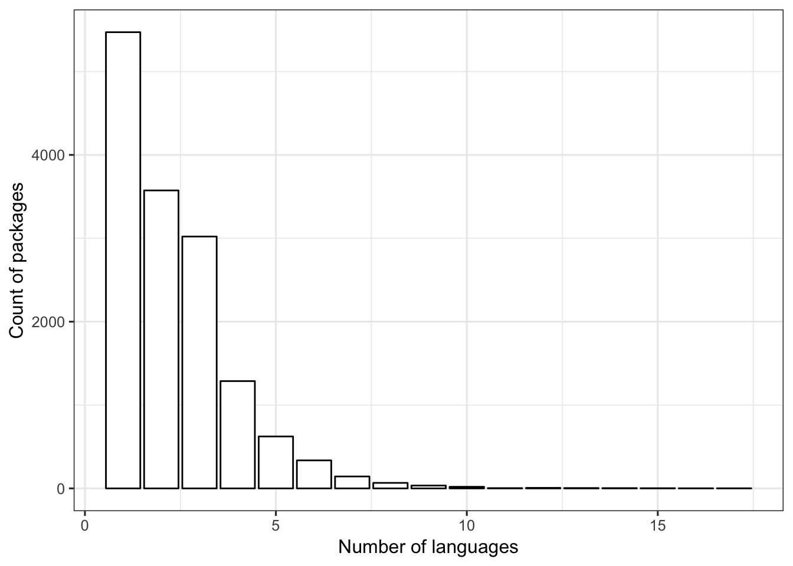
Most packages are in major version 0 or 1. Very few packages are in a major version > 5.
FIGURE 2. The number of R packages (y-axis) with the specified major version (x-axis).
ggplot(dat1, aes(x=maj_version)) +
geom_bar(color = "black", fill = "white") +
labs(x = "Major version", y = "Count of packages") +
theme_bw(base_size = 12)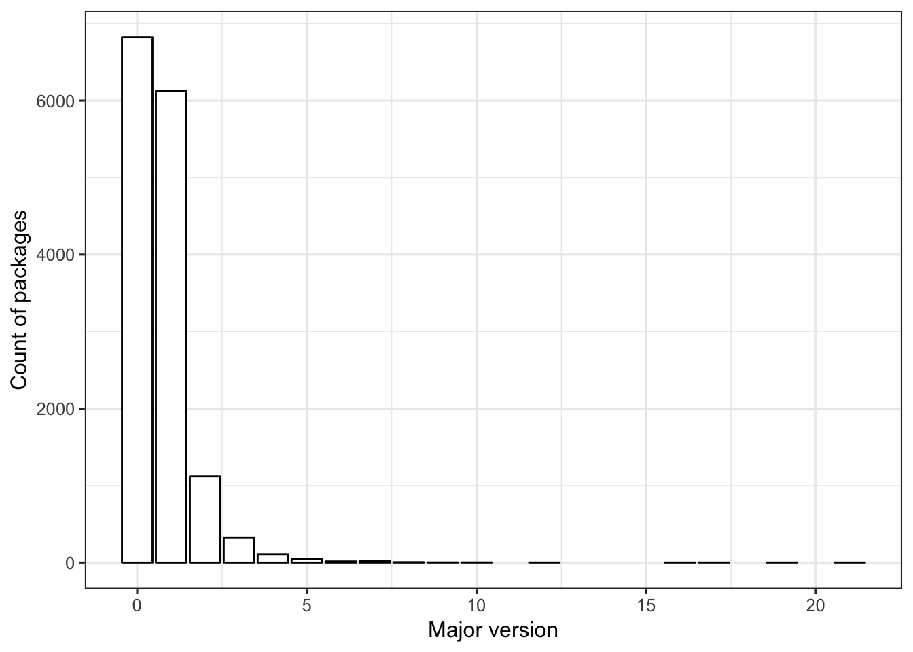
Regardless of major version, the number of languages in an R package tends to be low (3 or fewer languages). There are only five packages (out of > 14,000) with major versions > 10, and these have 4 or fewer languages.
FIGURE 3. Scatterplot: Relationship between major version (x-axis) and number of languages (y-axis) for an R package.
The size of the point is scaled to the number of packages.
ggplot(dat1, aes(x = maj_version, y = num_lang)) +
geom_count() +
labs(x = "Major version", y = "Number of languages") +
theme_bw(base_size = 12)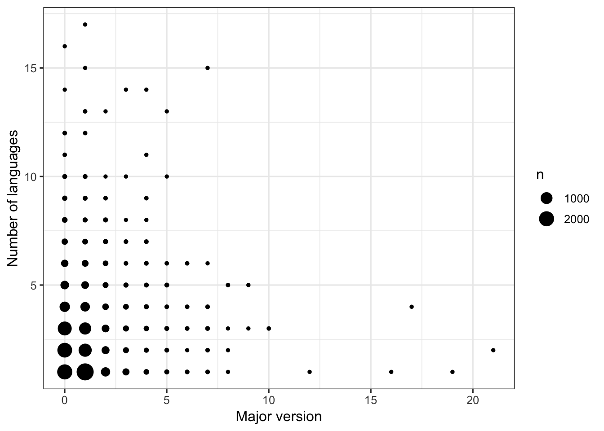
FIGURE 5. Boxplots: Relationship between major version (x-axis) and number of languages (y-axis) for an R package.
This figure shows the same information as Figure 4, but summarized as boxplots.
ggplot(dat1, aes(x = factor(maj_version), y = num_lang)) +
geom_boxplot() +
labs(x = "Major version", y = "Number of languages") +
theme_bw(base_size = 12)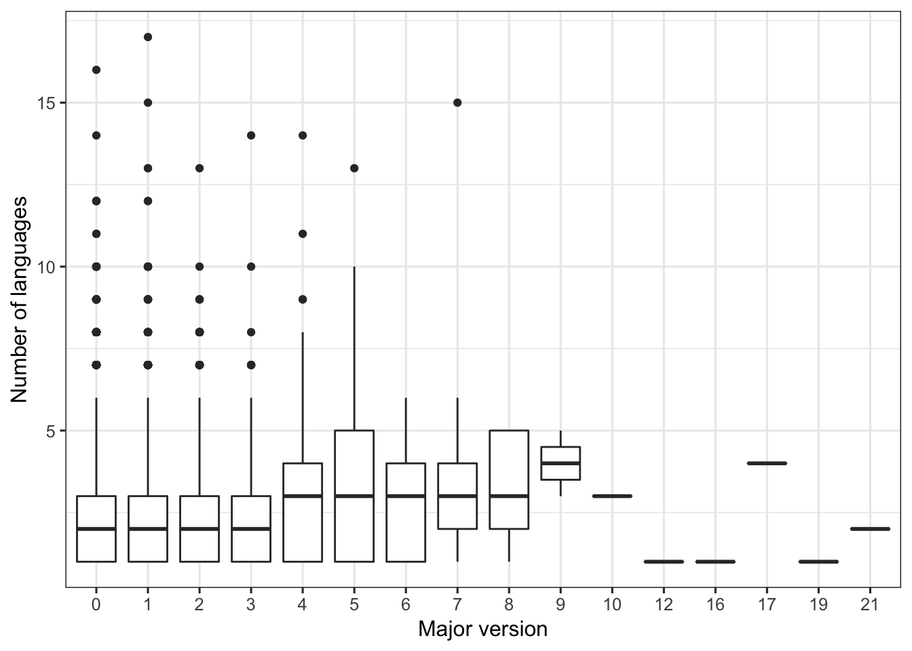
# Split data into train and test sets
set.seed(100)
trainset <- caret::createDataPartition(y = dat1$num_lang, p = 0.7, list = FALSE)
data_train = dat1[trainset,]
data_test = dat1[-trainset,]
# Check it
dim(dat1)## [1] 14595 2## [1] 10218 2## [1] 4377 2Using the training data, fit a Poisson regression null model to serve as a baseline for evaluating non-null models. I will use RMSE as a measure of model performance. In the null model, RMSE = 1.524.
resultmat <- data.frame(Method = c("null", "glm", "earth"), RMSE = rep(0,3))
# RMSE for a null model, as a baseline
summary(modcheck_null <- glm(num_lang ~ 1, family="poisson", data = data_train)) ##
## Call:
## glm(formula = num_lang ~ 1, family = "poisson", data = data_train)
##
## Deviance Residuals:
## Min 1Q Median 3Q Max
## -0.9912 -0.9912 -0.2296 0.4116 6.1704
##
## Coefficients:
## Estimate Std. Error z value Pr(>|z|)
## (Intercept) 0.851191 0.006464 131.7 <2e-16 ***
## ---
## Signif. codes: 0 '***' 0.001 '**' 0.01 '*' 0.05 '.' 0.1 ' ' 1
##
## (Dispersion parameter for poisson family taken to be 1)
##
## Null deviance: 8779.4 on 10217 degrees of freedom
## Residual deviance: 8779.4 on 10217 degrees of freedom
## AIC: 35392
##
## Number of Fisher Scoring iterations: 5# intercept is 0.853
resultmat$RMSE[resultmat$Method == "null"] <- rmse(modcheck_null)
sqrt(mean(residuals(modcheck_null, type = "response")^2)) # double-check, yes same result## [1] 1.523959With the single predictor added in a Poisson regression, RMSE is 1.524, which is the same as for the null model. With a regression spline, the RMSE is even higher than the null, at 2.13. That seems strange…
fitControl <- trainControl(method="repeatedcv",number=5,repeats=5)
(fit_glm <- train(num_lang ~ ., data = data_train, method = "glm", family = "poisson", trControl = fitControl))## Generalized Linear Model
##
## 10218 samples
## 1 predictor
##
## No pre-processing
## Resampling: Cross-Validated (5 fold, repeated 5 times)
## Summary of sample sizes: 8174, 8174, 8175, 8175, 8174, 8175, ...
## Resampling results:
##
## RMSE Rsquared MAE
## 1.523612 0.0008765399 1.178648resultmat$RMSE[resultmat$Method == "glm"] <- fit_glm$results$RMSE
# Using earth (regression splines)
(fit_earth <- train(num_lang ~ ., data = data_train, method = "earth", glm=list(family = "poisson"), trControl = fitControl)) ## Multivariate Adaptive Regression Spline
##
## 10218 samples
## 1 predictor
##
## No pre-processing
## Resampling: Cross-Validated (5 fold, repeated 5 times)
## Summary of sample sizes: 8174, 8174, 8174, 8175, 8175, 8174, ...
## Resampling results across tuning parameters:
##
## nprune RMSE Rsquared MAE
## 2 2.130251 0.00882987 1.492984
## 3 2.128964 0.01491017 1.494753
## 4 2.129168 0.01456662 1.494874
##
## Tuning parameter 'degree' was held constant at a value of 1
## RMSE was used to select the optimal model using the smallest value.
## The final values used for the model were nprune = 3 and degree = 1.TABLE 3. RMSE for a null model and two different analysis methods applied to the training data.
The response variable is the number of languages used in a package. Null = Poisson regression on null model; glm = Poisson regression with ‘major version’ as a predictor; earth = regression spline with ‘major version’ as a predictor.
| Method | RMSE |
|---|---|
| null | 1.523959 |
| glm | 1.523612 |
| earth | 2.128964 |
data_train$PredictGLM <- predict(fit_glm, data_train)
ggplot(data_train, aes(y = PredictGLM, x = num_lang)) +
geom_count() +
labs(x = "Actual # of Languages", y = "Predicted # of Languages", title = "Predictions vs. Actual # of Languages") +
theme_bw()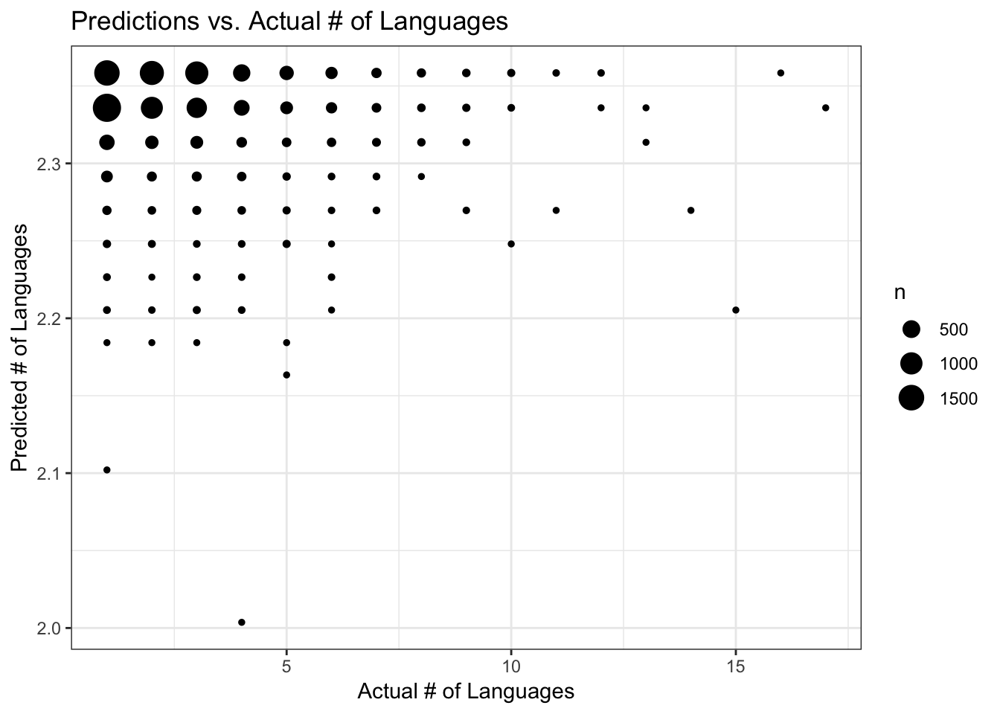
# Compute residuals and plot that against predicted values
data_train$ResidGLM <- residuals(fit_glm)
ggplot(data_train, aes(y = ResidGLM, x = PredictGLM)) +
geom_count() +
labs(x = "Predicted # of Languages", y = "Residuals", title = "Residuals vs. Predicted # of Languages") +
theme_bw()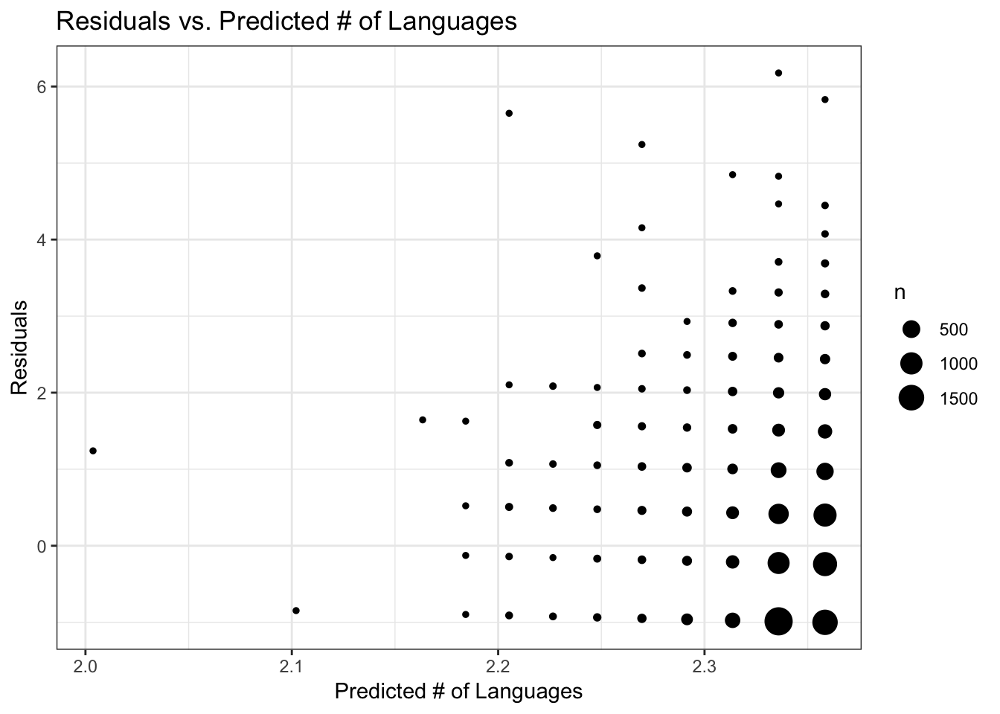
It looks like the the four data points with the highest predicted # of languages (> 3) could possibly be driving the regression model? (although this is such a small number of data points, maybe not). These data points with highest predicted # of languages belong to the data records with the four highest major versions. I’ll redo the analysis just on packages with major version < 9, because this includes the bulk of the data. Let’s see if results change any.
## # A tibble: 0 x 4
## # … with 4 variables: num_lang <int>, maj_version <dbl>, PredictGLM <dbl>,
## # ResidGLM <dbl>dat1_sub <- dat1[dat1$maj_version < 9, ]
# Split data into train and test sets
trainset_sub <- caret::createDataPartition(y = dat1_sub$num_lang, p = 0.7, list = FALSE)
data_train_sub = dat1_sub[trainset_sub,]
data_test_sub = dat1_sub[-trainset_sub,] resultmat_sub <- data.frame(Method = c("null_sub", "glm_sub", "earth_sub"), RMSE = rep(0,3))
# RMSE for a null model on the subset data, as a baseline
summary(modcheck_null_sub <- glm(num_lang ~ 1, family="poisson", data = data_train_sub)) ##
## Call:
## glm(formula = num_lang ~ 1, family = "poisson", data = data_train_sub)
##
## Deviance Residuals:
## Min 1Q Median 3Q Max
## -0.9953 -0.9953 -0.2341 0.4067 6.1631
##
## Coefficients:
## Estimate Std. Error z value Pr(>|z|)
## (Intercept) 0.854240 0.006456 132.3 <2e-16 ***
## ---
## Signif. codes: 0 '***' 0.001 '**' 0.01 '*' 0.05 '.' 0.1 ' ' 1
##
## (Dispersion parameter for poisson family taken to be 1)
##
## Null deviance: 8798.4 on 10211 degrees of freedom
## Residual deviance: 8798.4 on 10211 degrees of freedom
## AIC: 35427
##
## Number of Fisher Scoring iterations: 5# intercept is 0.853
resultmat_sub$RMSE[resultmat_sub$Method == "null_sub"] <- rmse(modcheck_null_sub)set.seed(555)
(fit_glm_sub <- train(num_lang ~ ., data = data_train_sub, method = "glm", family = "poisson", trControl = fitControl))## Generalized Linear Model
##
## 10212 samples
## 1 predictor
##
## No pre-processing
## Resampling: Cross-Validated (5 fold, repeated 5 times)
## Summary of sample sizes: 8169, 8171, 8169, 8170, 8169, 8171, ...
## Resampling results:
##
## RMSE Rsquared MAE
## 1.530124 0.001401754 1.178145resultmat_sub$RMSE[resultmat_sub$Method == "glm_sub"] <- fit_glm_sub$results$RMSE
# Using earth (regression splines)
(fit_earth_sub <- train(num_lang ~ ., data = data_train_sub, method = "earth", glm=list(family = "poisson"), trControl = fitControl)) ## Multivariate Adaptive Regression Spline
##
## 10212 samples
## 1 predictor
##
## No pre-processing
## Resampling: Cross-Validated (5 fold, repeated 5 times)
## Summary of sample sizes: 8169, 8169, 8170, 8170, 8170, 8169, ...
## Resampling results across tuning parameters:
##
## nprune RMSE Rsquared MAE
## 2 2.137209 0.01217714 1.497885
## 3 2.135610 0.01966892 1.500289
## 4 2.135610 0.01966892 1.500289
##
## Tuning parameter 'degree' was held constant at a value of 1
## RMSE was used to select the optimal model using the smallest value.
## The final values used for the model were nprune = 3 and degree = 1.The results don’t look any different when I only use the data with major version < 9. That is, number of languages does not seem to be associated with major version .
TABLE 4. RMSE for a null model and two different analysis methods applied to training data with major version < 9.
The response variable is the number of languages used in a package. Null = Poisson regression on null model; glm = Poisson regression with ‘major version’ as a predictor; earth = regression spline with ‘major version’ as a predictor.
| Method | RMSE |
|---|---|
| null_sub | 1.531110 |
| glm_sub | 1.530124 |
| earth_sub | 2.135610 |
As we already knew, the glm model has lower RMSE than the regression spline model.
FIGURE 6. Comparison of model uncertainty for glm and regression spline models, using three metrics.
extr_uncertainty <- resamples(list(fit_glm_sub, fit_earth_sub), modelNames = list("fit_glm_sub", "fit_earth_sub"))
extr_uncertainty$values$`fit_glm_sub~RMSE`## [1] 1.489485 1.585230 1.497949 1.579100 1.606965 1.579899 1.448188
## [8] 1.570475 1.523321 1.461191 1.601403 1.539507 1.542967 1.481498
## [15] 1.507336 1.483156 1.572574 1.523208 1.514173 1.573925 1.495742
## [22] 1.504472 1.517624 1.553944 1.499766## [1] 2.109610 2.092437 2.105359 2.163551 2.110330 2.113653 2.096752
## [8] 2.153632 2.047056 2.188058 2.129789 2.138341 2.097807 2.075031
## [15] 2.150646 2.185956 2.165986 2.123271 2.228987 2.099203 2.140423
## [22] 2.184857 2.198352 2.160714 2.130460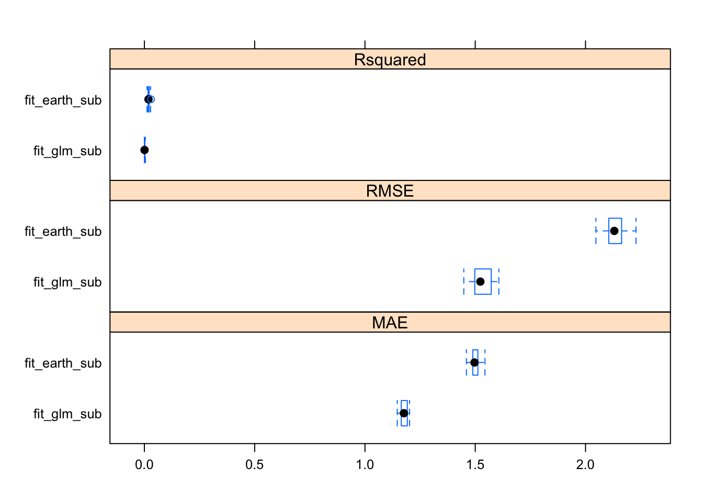
I’ll run diagnostic plots on a model–they are all similar in performance, so I’ll just use the Poisson regression analysis of the subset data. The plot of predictons vs. actual number of languages shows that predictions mostly fall between 2.34 and 2.36 regardless of the actual number of languages (this may be difficult to see, but the size of the points is scaled to the number of data records). I think this pretty much shows that the model with predictor really isn’t any good because regardless of the actual number of languages the predicted number is close to the overall mean of the actual data. The residual plots are also odd-looking, with the residuals mostly falling between -1 and +1 but with some large residuals for the higher predicted numbers of langugages. The range of predicted number of languages is very small though, not straying far from the mean.
FIGURE 7. Predicted vs. actual number of languages, using the Poisson regression model with training data
data_train_sub$PredictGLM <- predict(fit_glm_sub, data_train_sub)
ggplot(data_train_sub, aes(y = PredictGLM, x = num_lang)) +
geom_count() +
labs(x = "Actual # of Languages", y = "Predicted # of Languages", title = "Predictions vs. Actual # of Languages") +
theme_bw()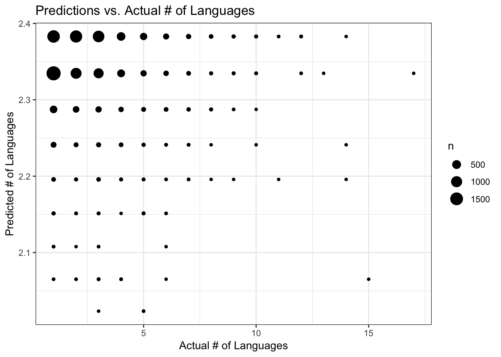
FIGURE 8. Residuals versus predicted number of languages, using the Poisson regression model with training data
# Compute residuals and plot that against predicted values
data_train_sub$ResidGLM <- residuals(fit_glm_sub)
ggplot(data_train_sub, aes(y = ResidGLM, x = PredictGLM)) +
geom_count() +
labs(x = "Predicted # of Languages", y = "Residuals", title = "Residuals vs. Predicted # of Languages") +
theme_bw()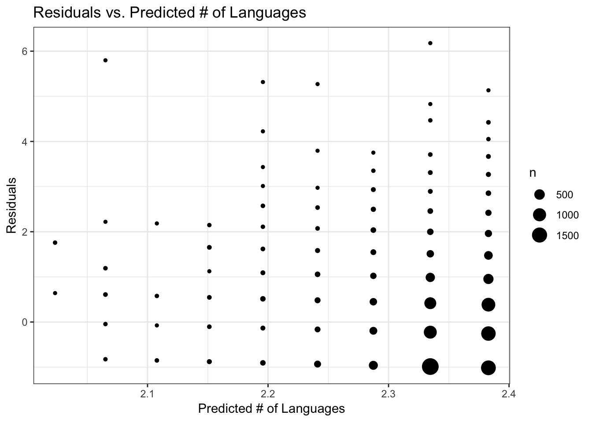
None of the models were any better than the null, but for the sake of completeness I’ll see how the model does when applied to the test data that were set aside. For this, I’ll again use the Poisson regression analysis of the subset data. The RMSE for the model on the test data is 1.52, similar to the RMSE on the training data. The diagnostic plots look very similar to those for the training data.
FIGURE 9. Predicted vs. actual number of languages, using the Poisson regression model with TEST data
# Apply the subset model to the test data
data_test_sub$PredictGLM <- predict(fit_glm_sub, data_test_sub)
rmse(data_test_sub$num_lang, data_test_sub$PredictGLM)## [1] 1.532279ggplot(data_test_sub, aes(y = PredictGLM, x = num_lang)) +
geom_count() +
labs(x = "Actual # of Languages", y = "Predicted # of Languages", title = "Predictions vs. Actual # of Languages (on TEST data)") +
theme_bw()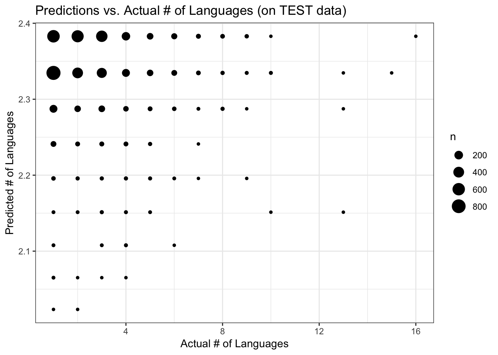
FIGURE 10. Residuals versus predicted number of languages, using the Poisson regression model with TEST data
# Compute residuals and plot that against predicted values
data_test_sub$ResidGLM <- data_test_sub$num_lang - data_test_sub$PredictGLM
ggplot(data_test_sub, aes(y = ResidGLM, x = PredictGLM)) +
geom_count() +
labs(x = "Predicted # of Languages", y = "Residuals", title = "Residuals vs. Predicted # of Languages (on TEST data)") +
theme_bw()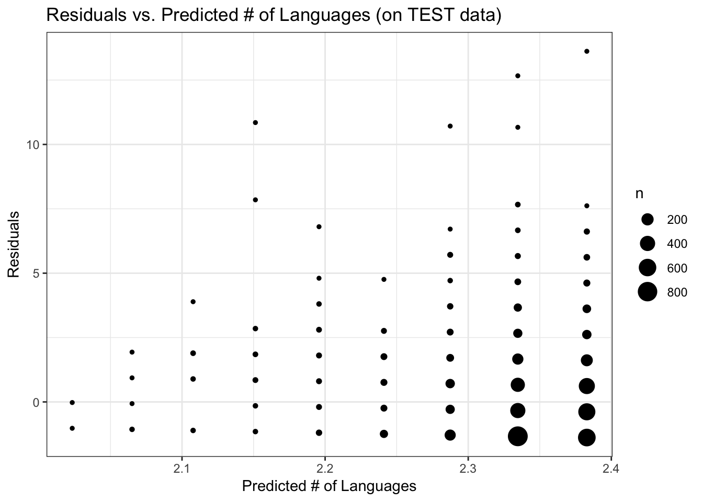
MY CONCLUSION FROM THIS ANALYSIS is that the number of langugages used in a package is unrelated to the major version. That is, as a package is further developed (higher major version), the number of languages used in the package neither increases nor decreases in a deterministic way. One of the reasons for this completely uninteresting result may be that the range of predictor values was fairly limited. That is, most R packages are in their 0th or 1st major version. Only a small percentage of packages are at major version 3 or higher. On the other hand, there may very well just be no relationship between number of languages and major version of a package.
For the more common non-R languages used in R packages, it would be interesting to look for distinguishing characteristics. For example, is the code:comment ratio characteristically higher for some languages? Are certain languages more frequently associated with more developed (i.e., higher major version) packages? This will be a classification analysis for predicting the computer language used in package files.
First, I’ll format the data. To be consistent with the final Q1 analysis, I’m using data for packages with major versions < 9. I’m adding two predictors: 1) the proportion of code that is comments, and 2) the number of files. From looking at the file, it seems that the variable ‘code’ does NOT include ‘comment’ and ‘blank’ because some records have more ‘comments’ than ‘code’. There are some records with very few lines of code (sometimes 0 code), so I’m actually going to omit those from analysis and focus on records with > 20 lines of code).
Among the five languages in this analysis, CSS and Tex have sample sizes that are an order of magnitude smaller than C-type, Markdown, and HTML. It may not make sense to include CSS and Tex in this analysis, but I’ll leave them in for now just to see.
# Data for Q2
dat2 <- dat %>%
dplyr::select(language, maj_version, comment, code, file) %>%
dplyr::filter(maj_version < 9 & code > 20) %>%
dplyr::mutate(
prop_comment = round((comment/(comment + code))*100), 2) %>%
dplyr::select(language, file, prop_comment, maj_version) %>%
dplyr::filter(language != "R")
summary(dat2)## language file prop_comment maj_version
## Markdown :4187 Min. : 1.0 Min. : 0.00 Min. :0.0000
## HTML :3607 1st Qu.: 1.0 1st Qu.: 0.00 1st Qu.:0.0000
## C++ :1988 Median : 2.0 Median : 1.00 Median :0.0000
## C :1738 Mean : 6.9 Mean : 8.63 Mean :0.6907
## C/C++ Header:1514 3rd Qu.: 3.0 3rd Qu.:13.00 3rd Qu.:1.0000
## CSS : 375 Max. :10737.0 Max. :98.00 Max. :8.0000
## (Other) :2923# only use the top five non-R languages, so figure out which those are. I checked this before, but need to re-do it on this subset of data.
(Q2_pkg_lang <- dat2 %>%
group_by(language) %>%
summarize(count=n()) %>%
arrange(desc(count)) %>%
top_n(n = 10))## # A tibble: 10 x 2
## language count
## <fct> <int>
## 1 Markdown 4187
## 2 HTML 3607
## 3 C++ 1988
## 4 C 1738
## 5 C/C++ Header 1514
## 6 CSS 375
## 7 TeX 344
## 8 Bourne Shell 324
## 9 JavaScript 310
## 10 Fortran 77 289# I think 'C', 'C++', and 'C/C++ Header' can probably be combined into one language called 'C-type'
dat2$language <- as.character(dat2$language)
dat2$language[dat2$language %in% c("C", "C++", "C/C++ Header")] <- "C-type"
(Q2_pkg_lang <- dat2 %>%
group_by(language) %>%
summarize(count=n()) %>%
arrange(desc(count)) %>%
top_n(n = 5))## # A tibble: 5 x 2
## language count
## <chr> <int>
## 1 C-type 5240
## 2 Markdown 4187
## 3 HTML 3607
## 4 CSS 375
## 5 TeX 344dat2 <- dat2[dat2$language %in% Q2_pkg_lang$language, ]
dat2$language <- factor(dat2$language)
summary(dat2)## language file prop_comment maj_version
## C-type :5240 Min. : 1.000 Min. : 0.000 Min. :0.0000
## CSS : 375 1st Qu.: 1.000 1st Qu.: 0.000 1st Qu.:0.0000
## HTML :3607 Median : 2.000 Median : 1.000 Median :0.0000
## Markdown:4187 Mean : 6.469 Mean : 7.839 Mean :0.6727
## TeX : 344 3rd Qu.: 3.000 3rd Qu.:12.000 3rd Qu.:1.0000
## Max. :10737.000 Max. :98.000 Max. :8.0000Explore the data that will be used in analysis. Yikes! The number of files is really skewed and there are some packages with a ridiculously large number of files (> 1000) for C-type language. Based on differences in the x-axis scale by language, it seems like there might be a difference among languages in probability of having a large number of files. For example, for Markdown the number of files seems to stay pretty small (mostly < 18 files). If the number of files is large, it’s likely to be CSS or C-type language.
FIGURE 11. For each language, bar plot of the number of files per package.
# Univariate summaries
ggplot(dat2, aes(x=file)) +
geom_bar(color = "black", fill = "white") +
labs(x = "Number of files", y = "Count") +
theme_bw(base_size = 12) +
facet_wrap(language ~ ., scales = "free_x")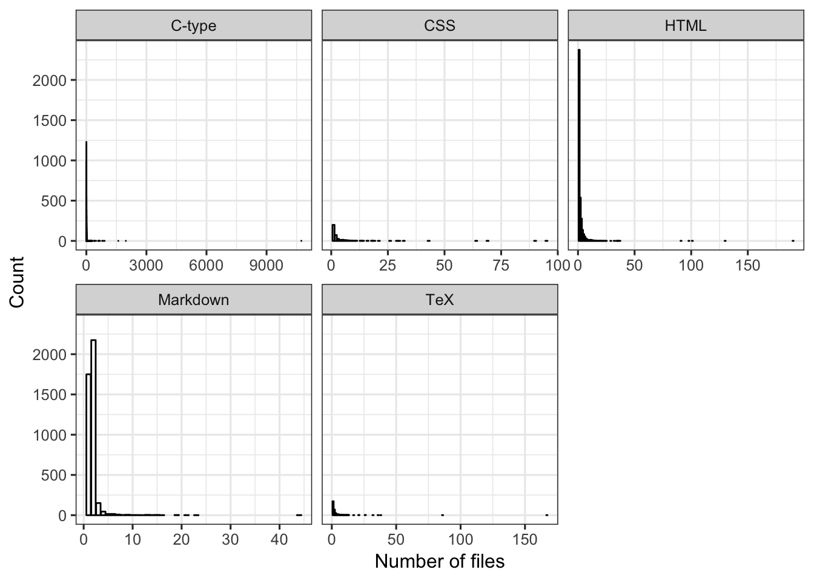
# Which are the data records with > 1000 files in a package?
dat2[dat2$file > 1000,] # oh these are all C-type## # A tibble: 3 x 4
## language file prop_comment maj_version
## <fct> <dbl> <dbl> <dbl>
## 1 C-type 10737 16 1
## 2 C-type 1594 16 1
## 3 C-type 1974 32 2The distribution of records among major version is similar for the three most frequent languages (C-type, Markdown, HTML). For CSS and TeX, the distribution is relatively more uniform among major versions–the sample sizes for these two languages is also very small.
FIGURE 12. For each language, bar plot of major version levels.
ggplot(dat2, aes(x=maj_version)) +
geom_bar(color = "black", fill = "white") +
labs(x = "Major version", y = "Count") +
theme_bw(base_size = 12) +
facet_wrap(language ~ ., scales = "free_x")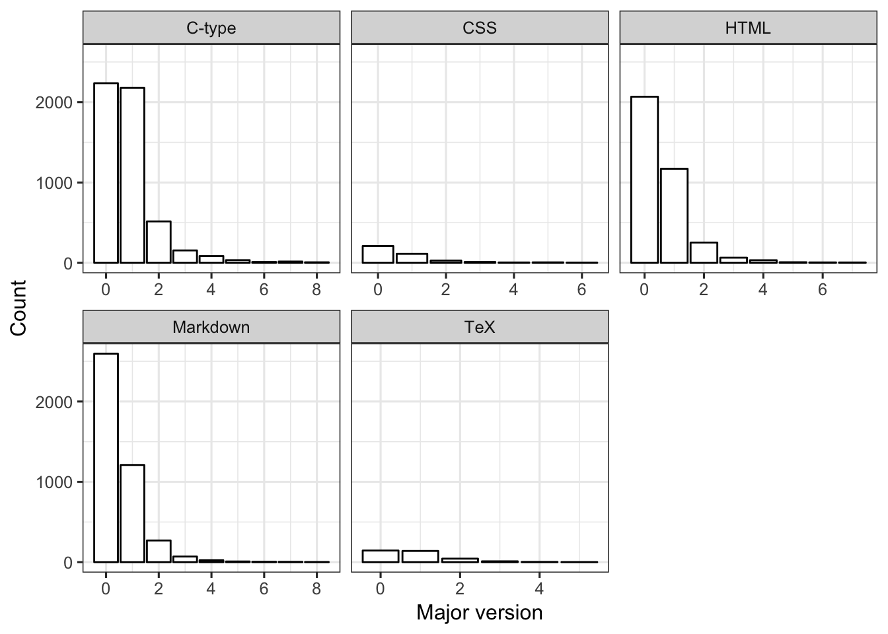
The languages do seem to differ in their distribution of % comment. Specifically, HMTL and Markdown files seem to have lower % comment than other languages. C-type files have larger % comment than other languages do.
FIGURE 13. For each language, distribution of % comment (i.e., proportion of code that is comments).
ggplot(dat2, aes(x=prop_comment)) +
geom_histogram(color = "black", fill = "white") +
labs(x = "% comment", y = "Count") +
theme_bw(base_size = 12) +
facet_grid(language ~ ., scales = "free")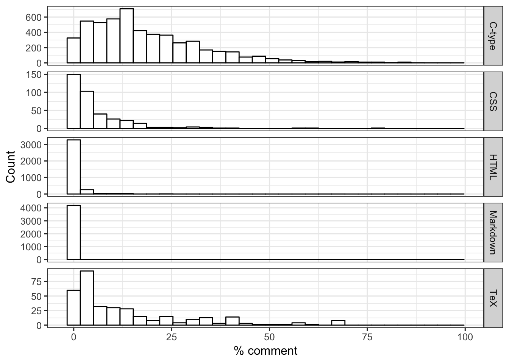
set.seed(123)
trainset <- caret::createDataPartition(y = dat2$language, p = 0.7, list = FALSE)
data_train = dat2[trainset,]
data_test = dat2[-trainset,]
# Check it
dim(dat2)## [1] 13753 4## [1] 9628 4## [1] 4125 4I’ll use accuracy as the performance measure to track in this classification analysis. First, I’ll check accuracy of a null model, to serve as a baseline for comparing models. The accuracy of the null model is 38%, which is the proportion of the actual data that is C-type language, the most frequent (non-R) language.
## # weights: 10 (4 variable)
## initial value 22134.599610
## iter 10 value 17482.891737
## final value 17482.866467
## converged## Call:
## multinom(formula = language ~ 1, data = dat2)
##
## Coefficients:
## (Intercept)
## CSS -2.6373906
## HTML -0.3735062
## Markdown -0.2243471
## TeX -2.7233154
##
## Std. Errors:
## (Intercept)
## CSS 0.05346103
## HTML 0.02163527
## Markdown 0.02072841
## TeX 0.05565428
##
## Residual Deviance: 34965.73
## AIC: 34973.73predict_null <- predict(mod_null) # the null model always predicts the highest frequency one, which is C-type
outcome <- dat2$language
(accur <- mean(outcome == predict_null)) # accuracy is 0.38## [1] 0.3810078## outcome
## C-type CSS HTML Markdown TeX
## 0.38100778 0.02726678 0.26227005 0.30444267 0.02501272n_cores <- 4
cl <- makePSOCKcluster(n_cores)
registerDoParallel(cl)
set.seed(1111)
fitControl <- trainControl(method="repeatedcv", number=5, repeats=5)
treetune_df <- data.frame(TuneLength =1:10, cp = rep(0,10), Accuracy = rep(0,10), AccuracySD = rep(0,10))
for(t in treetune_df$TuneLength) {
rpart_fit = caret::train(language ~ ., data=data_train, method="rpart", trControl = fitControl, na.action = na.pass, tuneLength = t)
best_acc <- rpart_fit$results[rpart_fit$results$Accuracy == max(rpart_fit$results$Accuracy),]
treetune_df[treetune_df$TuneLength == t, ] <- c(t, best_acc[c("cp", "Accuracy", "AccuracySD")])
}With the ‘rpart’ method and all predictors, we are able to get the accuracy up to 0.75. It seems like once we have at least a tune length of 4 in this analysis, we get close to the highest accuracy possible. With longer tune lengths, the accuracy can be slightly improved, but the trade-off is a more complicated tree for just a little better accuracy. [NOTE: I don’t know if it makes sense to compare different tune lengths instead of just running the analysis once with a large tune length, such as 10. But when I did the latter I got a complicated classification tree that was barely more accurate than the tree with the maximum tune length set at 4. I did the analysis this way so I could choose simpler models when more complicated models (longer tune length) barely improved accuracy.]
TABLE 5. Rpart method on training data: Model accuracy for different tune lengths.
| TuneLength | cp | Accuracy | AccuracySD |
|---|---|---|---|
| 1 | 0.4394295 | 0.4993123 | 0.1363193 |
| 2 | 0.1367450 | 0.7022837 | 0.0409952 |
| 3 | 0.0104027 | 0.7437671 | 0.0075545 |
| 4 | 0.0005872 | 0.7495012 | 0.0067422 |
| 5 | 0.0005034 | 0.7501867 | 0.0071441 |
| 6 | 0.0005034 | 0.7507476 | 0.0066740 |
| 7 | 0.0005872 | 0.7503948 | 0.0088835 |
| 8 | 0.0005034 | 0.7501040 | 0.0054979 |
| 9 | 0.0005872 | 0.7499785 | 0.0076188 |
| 10 | 0.0005872 | 0.7506220 | 0.0069302 |
I chose a tune length of four as the optimal tune length for a simple but relatively accurate model. With a tune length of four, the most important split occurs between records that have >= 3% comments (most likely language = C-type) and those that have < 3% comments (all other languages). The next split is also based on % comments–those with >= 1% comments are most likely to be HTML. The final split depends on number of files for records with < 1% comments. Among those records, when the number of files is >= 3, the most likely language is HTML; otherwise, Markdown. This tree doesn’t parse out CSS and TeX languages, but those are the least common languages in this dataset (dat2).
FIGURE 14. Classification tree for tune length of 4.
rpart_fit4 = caret::train(language ~ ., data=data_train, method="rpart", trControl = fitControl, na.action = na.pass, tuneLength = 4)
print(rpart_fit4$results)## cp Accuracy Kappa AccuracySD KappaSD
## 1 0.0005872483 0.7503106 0.6281594 0.006909923 0.01028994
## 2 0.0104026846 0.7435599 0.6179606 0.007205923 0.01116113
## 3 0.1367449664 0.6980855 0.5477286 0.041751338 0.06393927
## 4 0.4394295302 0.4883631 0.1894298 0.134256533 0.23680068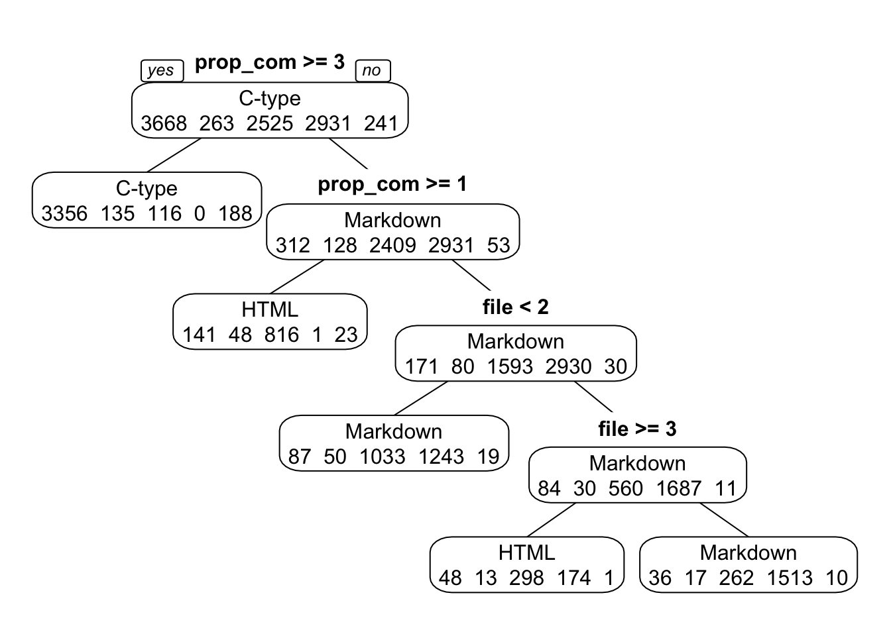
ww=17.8/2.54; wh=ww; #for saving plot
dev.print(device=png,width=ww,height=wh,units="in",res=600,file="rparttree.png") #save tree to file## quartz_off_screen
## 2# set.seed(1111)
# tuning_grid <- expand.grid( .mtry = seq(1,3,by=1), .splitrule = "gini", .min.node.size = seq(2,8,by=1) )
# ranger_fit <- caret::train(language ~ ., data=data_train, method="ranger", trControl = fitControl, tuneGrid = tuning_grid, na.action = na.pass)
#
# saveRDS(ranger_fit, "TidyTuesday2_ranger_fit.RDS") # I'm saving it because it takes a long time to run. So when re-running this script I will just load the .RDS.With the random forest method, we get a combination of trees as the “product”. We can plot model performance as a function of the model tuning parameters. This plot suggests that we get the best model with two predictors and a minimum node size of seven. The highest accuracy from repeated cross-validation is just over 0.75. These results are consistent with what we found with the ‘rpart’ method.
FIGURE 15. Random forest method on training data: Model performance as a function of tuning parameters.
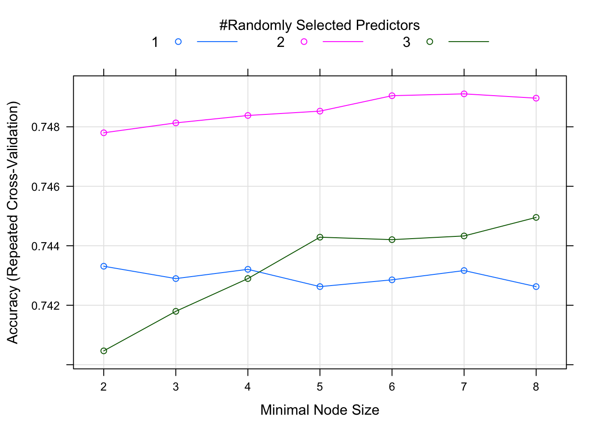
As a final try, I’ll repeat the ‘rpart’ analysis, but with scaled and centered predictors to see how that affects results.
set.seed(1111)
treetuneCS_df <- data.frame(TuneLength =1:10, cp = rep(0,10), Accuracy = rep(0,10), AccuracySD = rep(0,10))
for(t in treetuneCS_df$TuneLength) {
rpart_fitCS = caret::train(language ~ ., data=data_train, method="rpart", preProcess = c("center", "scale"), trControl = fitControl, na.action = na.pass, tuneLength = t)
best_accCS <- rpart_fitCS$results[rpart_fitCS$results$Accuracy == max(rpart_fitCS$results$Accuracy),]
treetuneCS_df[treetuneCS_df$TuneLength == t, ] <- c(t, best_accCS[c("cp", "Accuracy", "AccuracySD")])
}It doesn’t seem like scaling and centering predictors changed results any. The most important predictors are still proportion comment and number of files. The actual threshold values for splits is different because we’re working with centered and scaled data now.
TABLE 6. Rpart method on training data, but with scaled and centered predictors: Model accuracy for different tune lengths.
| TuneLength | cp | Accuracy | AccuracySD |
|---|---|---|---|
| 1 | 0.4394295 | 0.4993123 | 0.1363193 |
| 2 | 0.1367450 | 0.7022837 | 0.0409952 |
| 3 | 0.0104027 | 0.7437671 | 0.0075545 |
| 4 | 0.0005872 | 0.7495012 | 0.0067422 |
| 5 | 0.0005034 | 0.7501867 | 0.0071441 |
| 6 | 0.0005034 | 0.7507476 | 0.0066740 |
| 7 | 0.0005872 | 0.7503948 | 0.0088835 |
| 8 | 0.0005034 | 0.7501040 | 0.0054979 |
| 9 | 0.0005872 | 0.7499785 | 0.0076188 |
| 10 | 0.0005872 | 0.7506220 | 0.0069302 |
FIGURE 16. Classification tree for tune length of 4, with scaled and centered predictors.
rpartCS_fit4 = caret::train(language ~ ., data=data_train, method="rpart", preProcess = c("center", "scale"), trControl = fitControl, na.action = na.pass, tuneLength = 4) # Again a tune length of 4 seems like a good compromise between interpretability and accuracy.
print(rpartCS_fit4)## CART
##
## 9628 samples
## 3 predictor
## 5 classes: 'C-type', 'CSS', 'HTML', 'Markdown', 'TeX'
##
## Pre-processing: centered (3), scaled (3)
## Resampling: Cross-Validated (5 fold, repeated 5 times)
## Summary of sample sizes: 7702, 7703, 7701, 7703, 7703, 7703, ...
## Resampling results across tuning parameters:
##
## cp Accuracy Kappa
## 0.0005872483 0.7503106 0.6281594
## 0.0104026846 0.7435599 0.6179606
## 0.1367449664 0.6980855 0.5477286
## 0.4394295302 0.4883631 0.1894298
##
## Accuracy was used to select the optimal model using the largest value.
## The final value used for the model was cp = 0.0005872483.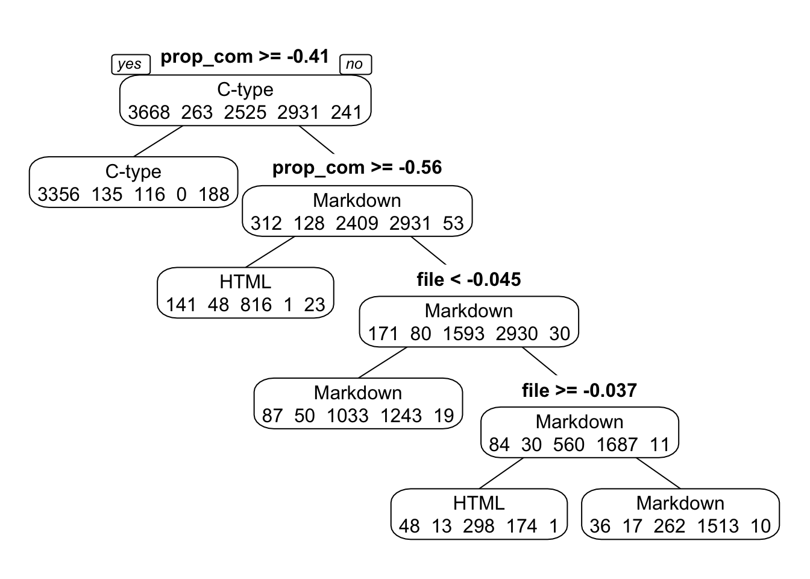
ww=17.8/2.54; wh=ww; #for saving plot
dev.print(device=png,width=ww,height=wh,units="in",res=600,file="rpartCStree.png") #save tree to file## quartz_off_screen
## 2I’ll use resampling to compare the performance of the three models I’ve tried: 1) rpart classification tree, 2) random forest, 3) rpart classification tree with scaled, centered predictors. Figure 17 suggests that the three models really do have about equal performance in terms of accuracy.
FIGURE 17. Comparison of model uncertainty for the classification tree and random forest models.
resamps <- resamples(list(tree = rpart_fit4,
RF = ranger_fit,
treeCS = rpartCS_fit4))
bwplot(resamps)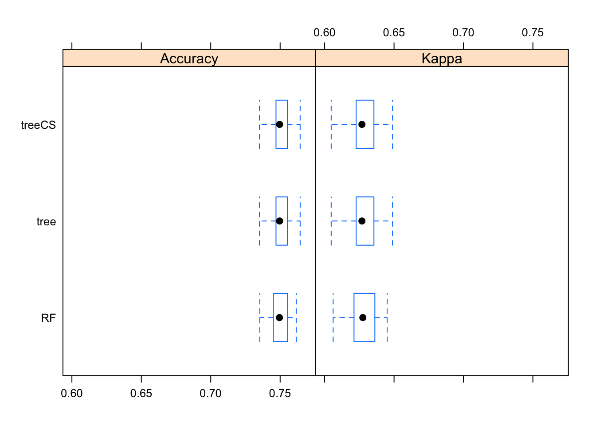
I’ll generate diagnostic summaries for the random forest model. Specifically, I’ll look for any patterns of the confusion matrix of true versus predicted outcomes. We have 75% accuracy with this model. The most common predictive “mistake” seems to be predicting Markdown when it’s actually HTML. Overall (balanced accuracy), the model does best with predicting C-type correctly, followed by Markdown.
TABLE 7. Predicted versus actual languages for random forest model on training data.
data_train$PredictRF <- predict(ranger_fit, data_train)
data_train = expss::apply_labels(data_train,
PredictRF = "Predicted Language (random forest)",
language = "Actual Language")
(acc_table <- cro(data_train$PredictRF, data_train$language))| Actual Language | |||||
|---|---|---|---|---|---|
| C-type | CSS | HTML | Markdown | TeX | |
| Predicted Language (random forest) | |||||
| C-type | 3375 | 122 | 87 | 178 | |
| CSS | 5 | ||||
| HTML | 165 | 68 | 1138 | 160 | 21 |
| Markdown | 127 | 67 | 1299 | 2771 | 29 |
| TeX | 1 | 1 | 1 | 13 | |
| #Total cases | 3668 | 263 | 2525 | 2931 | 241 |
## [1] 0.758413TABLE 8. Confusion matrix for random forest model on training data.
## Confusion Matrix and Statistics
##
## Reference
## Prediction C-type CSS HTML Markdown TeX
## C-type 3375 122 87 0 178
## CSS 0 5 0 0 0
## HTML 165 68 1138 160 21
## Markdown 127 67 1299 2771 29
## TeX 1 1 1 0 13
##
## Overall Statistics
##
## Accuracy : 0.7584
## 95% CI : (0.7497, 0.7669)
## No Information Rate : 0.381
## P-Value [Acc > NIR] : < 2.2e-16
##
## Kappa : 0.6411
##
## Mcnemar's Test P-Value : < 2.2e-16
##
## Statistics by Class:
##
## Class: C-type Class: CSS Class: HTML Class: Markdown
## Sensitivity 0.9201 0.0190114 0.4507 0.9454
## Specificity 0.9351 1.0000000 0.9417 0.7727
## Pos Pred Value 0.8971 1.0000000 0.7332 0.6455
## Neg Pred Value 0.9501 0.9731892 0.8283 0.9700
## Prevalence 0.3810 0.0273162 0.2623 0.3044
## Detection Rate 0.3505 0.0005193 0.1182 0.2878
## Detection Prevalence 0.3907 0.0005193 0.1612 0.4459
## Balanced Accuracy 0.9276 0.5095057 0.6962 0.8591
## Class: TeX
## Sensitivity 0.053942
## Specificity 0.999680
## Pos Pred Value 0.812500
## Neg Pred Value 0.976280
## Prevalence 0.025031
## Detection Rate 0.001350
## Detection Prevalence 0.001662
## Balanced Accuracy 0.526811Finally, I’ll see how the random forest model does when applied to the test data that were set aside. This will give us a better idea of the model’s true performance.
TABLE 9. Predicted versus actual languages for random forest model on TEST data.
data_test$PredictRF <- predict(ranger_fit, data_test)
data_test = expss::apply_labels(data_test,
PredictRF = "Predicted Number of Languages (random forest)",
language = "Actual Number of Languages")
(acc_table_test <- cro(data_test$PredictRF, data_test$language))| Actual Number of Languages | |||||
|---|---|---|---|---|---|
| C-type | CSS | HTML | Markdown | TeX | |
| Predicted Number of Languages (random forest) | |||||
| C-type | 1450 | 53 | 50 | 80 | |
| CSS | |||||
| HTML | 75 | 32 | 461 | 87 | 11 |
| Markdown | 41 | 27 | 569 | 1169 | 7 |
| TeX | 6 | 2 | 5 | ||
| #Total cases | 1572 | 112 | 1082 | 1256 | 103 |
## [1] 0.7478788TABLE 10. Confusion matrix for random forest model on TEST data.
## Confusion Matrix and Statistics
##
## Reference
## Prediction C-type CSS HTML Markdown TeX
## C-type 1450 53 50 0 80
## CSS 0 0 0 0 0
## HTML 75 32 461 87 11
## Markdown 41 27 569 1169 7
## TeX 6 0 2 0 5
##
## Overall Statistics
##
## Accuracy : 0.7479
## 95% CI : (0.7343, 0.7611)
## No Information Rate : 0.3811
## P-Value [Acc > NIR] : < 2.2e-16
##
## Kappa : 0.6253
##
## Mcnemar's Test P-Value : NA
##
## Statistics by Class:
##
## Class: C-type Class: CSS Class: HTML Class: Markdown
## Sensitivity 0.9224 0.00000 0.4261 0.9307
## Specificity 0.9283 1.00000 0.9326 0.7755
## Pos Pred Value 0.8879 NaN 0.6922 0.6448
## Neg Pred Value 0.9510 0.97285 0.8205 0.9624
## Prevalence 0.3811 0.02715 0.2623 0.3045
## Detection Rate 0.3515 0.00000 0.1118 0.2834
## Detection Prevalence 0.3959 0.00000 0.1615 0.4395
## Balanced Accuracy 0.9254 0.50000 0.6793 0.8531
## Class: TeX
## Sensitivity 0.048544
## Specificity 0.998011
## Pos Pred Value 0.384615
## Neg Pred Value 0.976167
## Prevalence 0.024970
## Detection Rate 0.001212
## Detection Prevalence 0.003152
## Balanced Accuracy 0.523277Model performance on the test data is not bad. For C-type especially, the model does pretty well. None of the test data were actually CSS, but that was a very small class in the original data anyway. As with the training data, a common predictive “mistake” of this random forest model seems to be predicting Markdown when it’s actually HTML.
MY CONCLUSION FROM THIS ANALYSIS is that a relatively small number of prediction splits can classify languages with not-too-bad accuracy (75% accuracy) compared to the null model (38% accuracy). The most important predictors are % comments (with splits at 1% and 3% comments) and, secondarily, the number of files (with a split at 3 files). The model is pretty good at correctly classifying C-type language and not too bad with Markdown. Its performance with classifying HTML is meh. The other two languages were pretty infrequent in the data, so it’s not too surprising that the model isn’t great at classifying them (CSS and TeX).